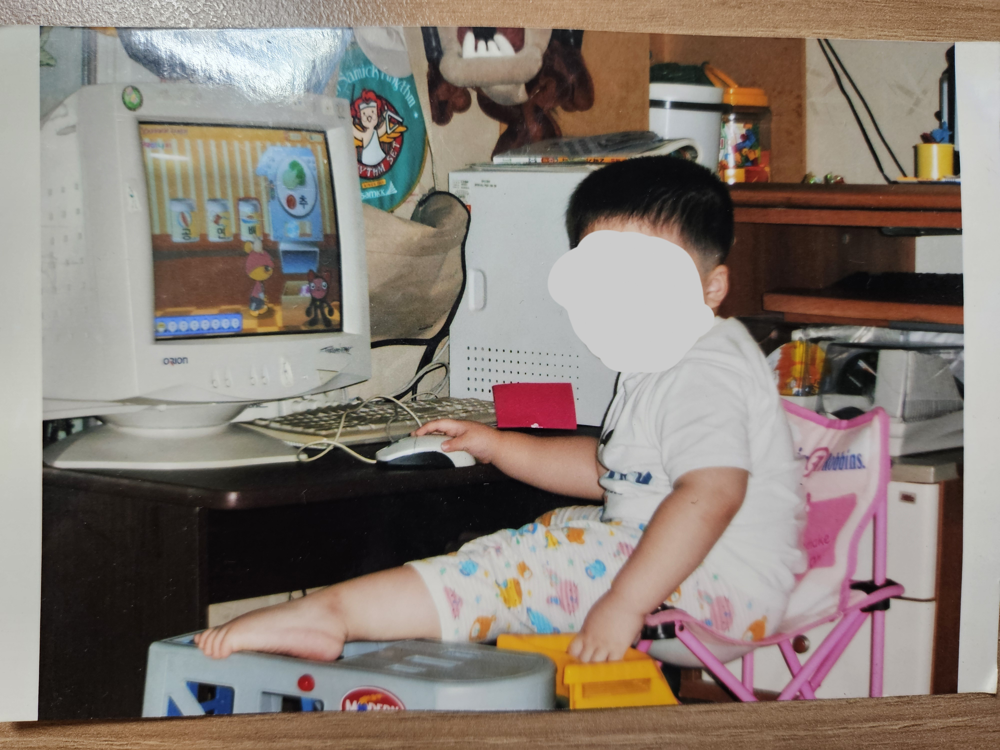

출생

아기 때인 거 보면, 저 컴퓨터가 내 인생의 첫 컴퓨터 같다.
주요 연표
2002년: 9월 6일 출생
출생 관련 썰
당시 엄마께서 몸이 아프셨었기에, 의사께서 날
"기적의 아이"
라고 부르셨다. 지금도 엄마께선 틈만 나면 이걸 강조하신다.
성인이 된 지금은 아기 시절의 기억이 없지만, 엄마의
증언(?)
덕에 얼추 알 수 있다. 100일 전까지
밤에 자다가 틈만 나면 울었다
던지...